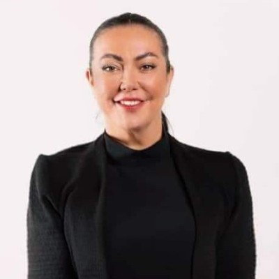

Open Architecture. Digital Transformation. Real Results.
Guiding telecoms
through the ODA journey.
Claire Watson helps communication service providers unlock the full potential of the TM Forum Open Digital Architecture — translating complex standards into practical transformation roadmaps that simplify operations and accelerate growth.

Watch intro
Watch again?
TM Forum Engagement Manager
Open Digital Architecture
eTOM · SID · Open APIs
BSS / OSS Transformation
AI-Native Operations